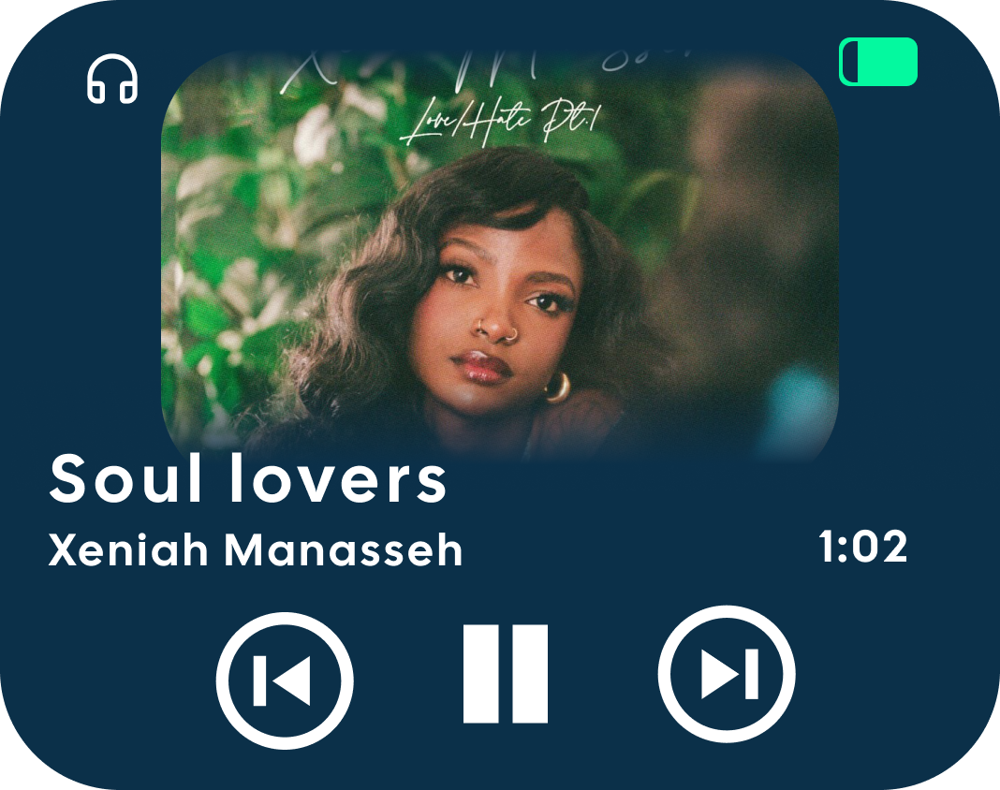
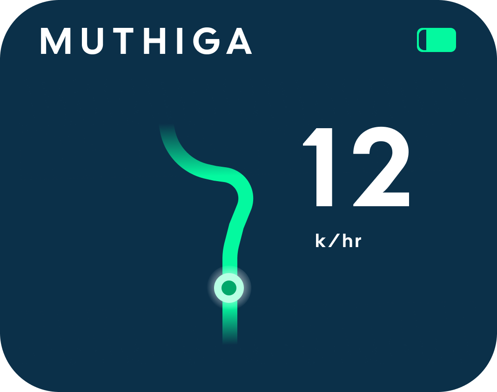
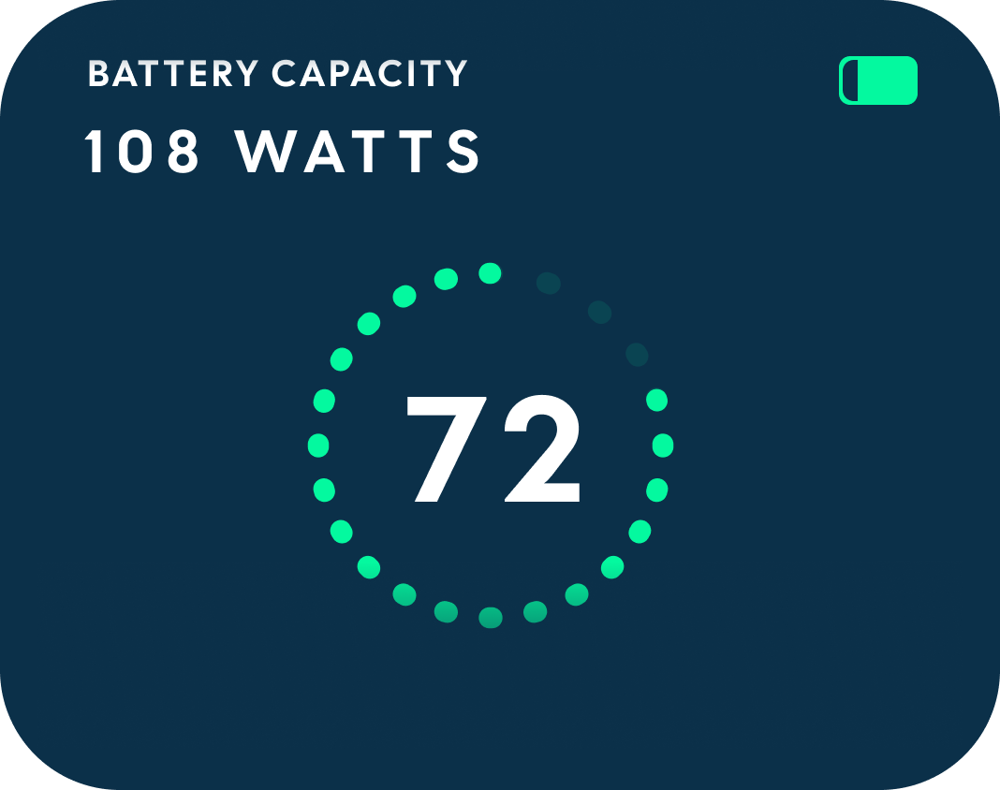
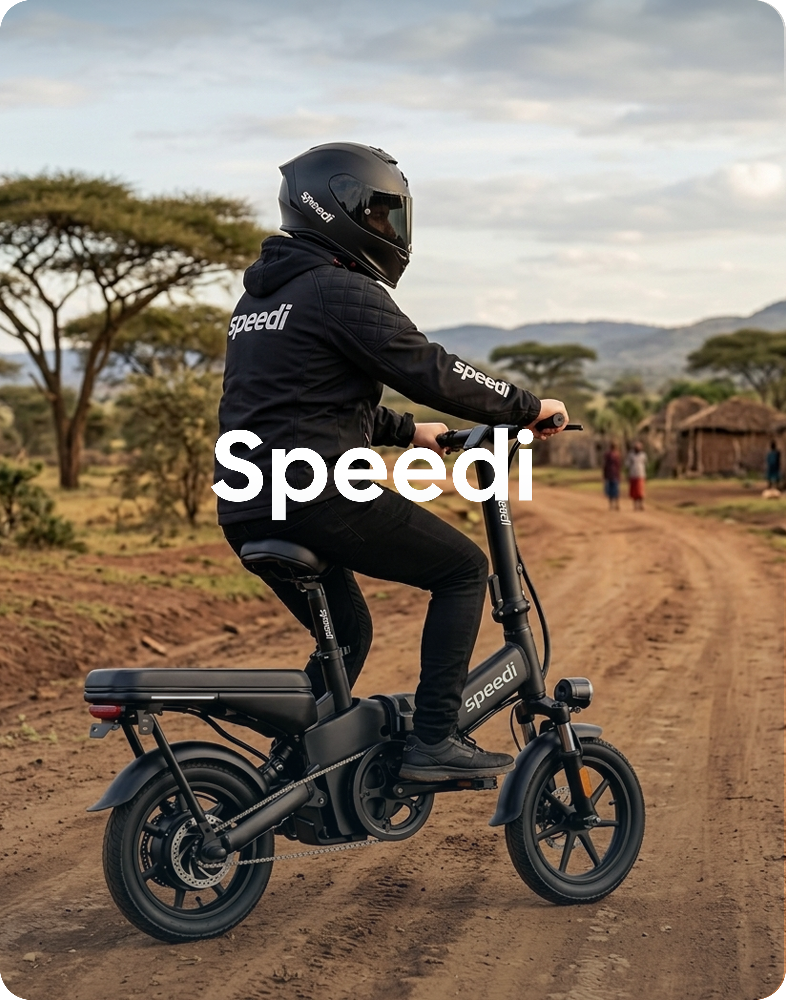
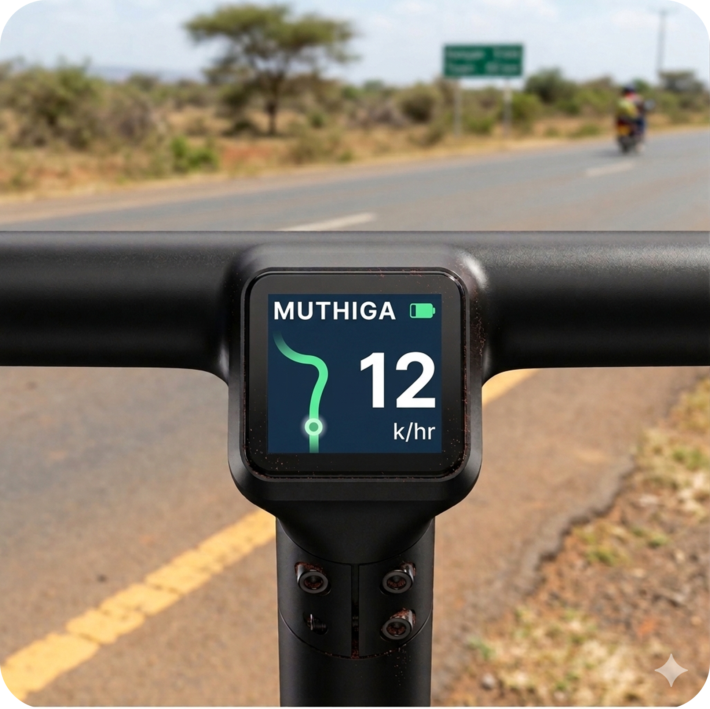
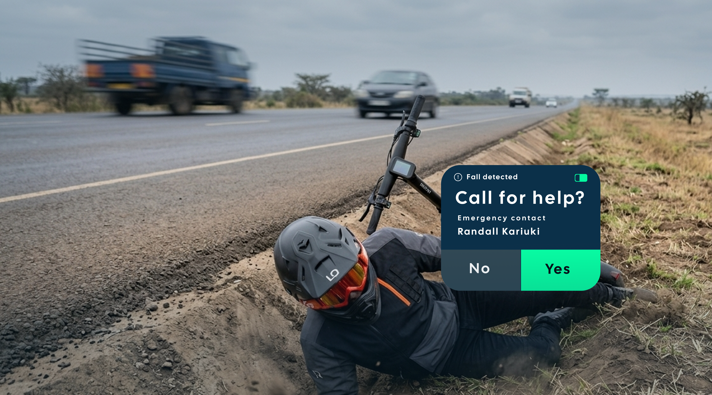

The Problem
Theft, unsafe roads and unforgiving conditions
Africa's EV market is growing — but most e-bikes arriving on local roads were designed for European and Asian markets. Speedi was conceptualized around the real demands of African cyclists.
- Durable and damage-proof hardware
- High contrast for day and night conditions
- Waterproof batteries
- Fast-charging and long-lasting charge
- Easy interconnectivity to Bluetooth devices and accessories
- Built-in rider safety features



Display UI screens designed for Speedi — glanceable data for every riding moment.
Security
Cyclists get targeted. Speedi is built with that in mind.
In Nairobi, major corridors like Ngong Road, Thika Road, and General Waruinge Street have been flagged as hotspots for crimes targeting cyclists — from phone snatching to the theft of high-value components like derailleurs, saddles, and lights.
Stolen parts move fast through informal markets, often before they can be traced. Speedi's integrated design reduces exposed, detachable parts — and its low-profile display doesn't advertise value the way a mounted phone does.
The Display
Secured display,
Confidence in your ride
Speedi's display integrates flush into the handlebar frame — giving you glanceable data, long battery life, and a profile low enough to stay out of sight and out of reach. Intuitive by design. Secure by build.




Safety
Life saving safety features
7
Cyclists lost their
lives in Jan 2026
12.5%
Increase in
road fatalities
76%
Of all road fatalities are cyclists,
pedestrians, and motorcyclists
In January 2026 alone, at least 7 cyclists died in road accidents in Kenya. By Q1's end, fatalities had risen 12.5% — with vulnerable road users making up 76% of all deaths.
In an emergency, every second matters. When Speedi is connected to your phone, the app helps you call and text your emergency contact the moment a fall is detected. No fumbling. No delay.
Process
Designing for Africa: An AI-Augmented Conceptualization Sprint
From first assumption to finished concept — in a single, structured sprint using Figma, Gemini, ChatGPT, Higgsfield, and DaVinci Resolve.
01 — Defining the problem
Starting from what Africa actually needs
Africa's EV market is growing — but most e-bikes arriving on local roads were designed for someone else. I started by mapping the real demands of African cyclists: unpredictable infrastructure, personal safety risks, and the constant threat of theft.
02 — Desktop research
AI-assisted, grounded in real data
With assumptions documented, I used AI-assisted research to compare them to real data — validating what the market already knew and surfacing patterns that shaped every design decision that followed.
03 — Ideation
Designing for Africa, not adapting for it
Instead of adapting a foreign design for local use, I asked a different question: what would an e-bike display look like if Africa was the primary market? That reframe drove every ideation decision — from what information to surface, to how the hardware fits into the rider's environment.
04 — Conceptualization
From static concept to motion in a single sprint
Display UI designed in Figma. Lifestyle imagery generated with Gemini to show the product in real context. Video sequences produced using Higgsfield's Seedance 2.0 model, then assembled in DaVinci Resolve with audio and supporting footage — moving from static concept to motion presentation entirely within this sprint.